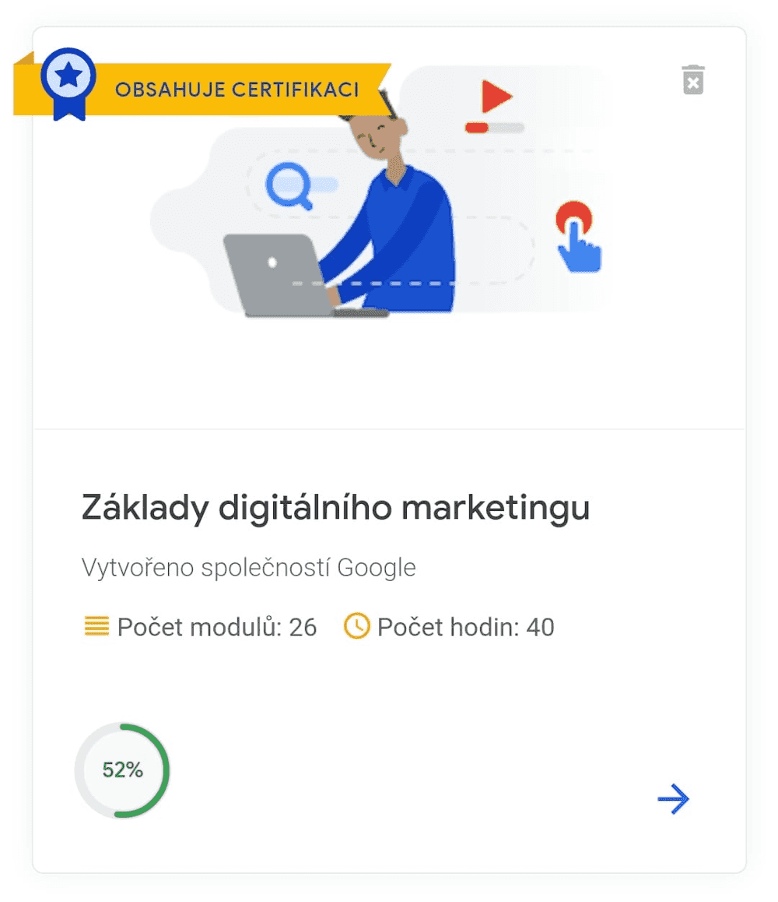

Post 5

Základy digitálního marketingu
Pro všechny, kteří nechtějí usnout na vavřínech, nebo si plánují rozjet vlastní podnikání na internetu, společnost Google připravila skvělý on-line kurz “Základy digitálního marketingu”. Popisuje širokou škálu nástrojů, jakým způsobem postupovat, aby firma na internetu prorazila a dostala se tak do povědomí zákazníků. V úplných začátcích je třeba stanovit si cíl, čeho chcete u své firmy na internetu dosáhnout. Vedle vývoje webové stránky a jejího správného nastavení SEO optimalizace, byste rozhodně neměli minout registraci firmy v internetových adresářích. Zaregistrovat se můžete například na “Moje firma” na Googlu, nebo “Firmy.cz” na Seznamu. Je pak mnohem pravděpodobnější, že Vás potenciální zákazník objeví.
Další v pořadí, kde Vaši firmu můžete prezentovat, jsou sociální sítě. Je třeba uvědomit si, jaké platformy jsou k prezentaci Vaší firmy nejadekvátnější. Nemusíte se zaměřovat pouze na známé velké sociální sítě, jako je Facebook a LinkedIn, existuje spousta méně známých sociálních sítí, které jsou zaměřené na konkrétní úzký profil, například "Behance" pro kreativce, a právě tato platforma může skvěle zapadat do Vašeho profilu. Pokud tomu tak opravdu je, přihlášení do této sítě Vám může přivést spoustu potenciálních zákazníků.
V kurzu Vám dále vysvětlí na jakém principu funguje vyhledávání. Jaká klíčová slova tedy zvolit pro svou optimalizaci webu, například s pomocí nástroje plánovače klíčových slov od Googlu, který je dostupný po přihlášení do služby "Google Ads". Dále se dozvíte možnosti, pomocí jakých nástrojů můžete analyzovat výsledky zájmu o Vaši firmu. Například nástroj Google Search Console, dokáže poskytovat zpětnou vazbu, jak vidí Vaši webovou stránku ve výsledcích vyhledávání Google. Zaregistrujte se proto pro použití na “Web masters Google”.
A vůbec, zaregistrujte se na kurz! Stojí to za to!
{kind=link}
{kind=link}
{kind=link}
{kind=link}